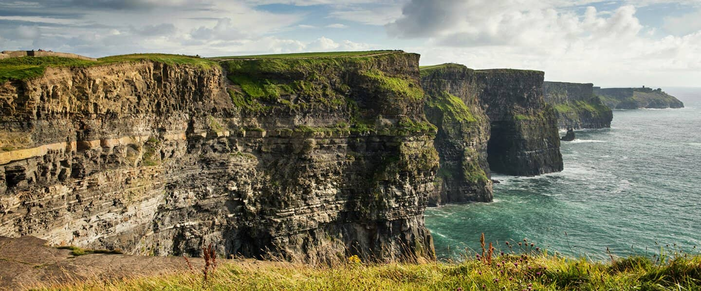
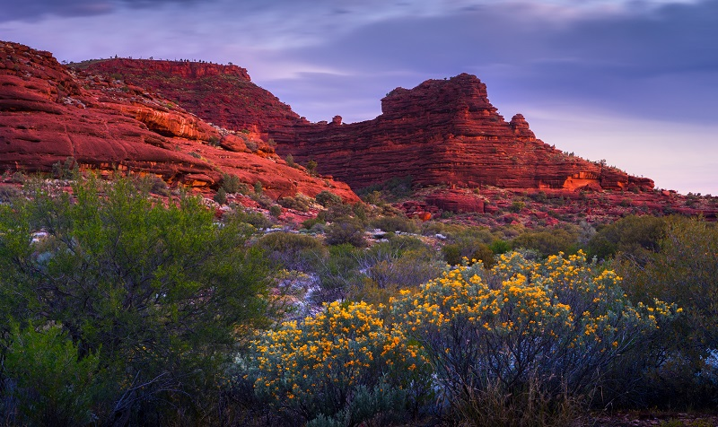

ABOUT THE TOURS
What better way to explore the land of a thousand welcomes than with a day tour from Dublin with Scenic Views? With stunning locations to choose from, there are endless opportunities to live out your Irish dreams! Here at Scenic Views, we are proud of our excellent-value, high-quality tours throughout this beautiful island. Recently, we have been awarded the TripAdvisor Traveller’s Choice Award 2019 as the 6th Best Day Trip in the world, the Best Day Trip Experience in Ireland and are consistent Winners of 5 Star Certificate of Excellence from TripAdvisor 2012-2019.

Choose between incredible destinations such as Glendalough, the Cliffs of Moher, the Giant’s Causeway, or explore some of the fiercely beautiful locations behind the HBO series Game of Thrones. Explore stunning natural landscapes and preserved heritage with the help of our friendly staff. A Wild Rover Tour is more than a holiday, it is an experience. Join Ireland’s leading day tour company, and journey with us through this small country with a big heart. We’re excited to help you discover the ancient charm of our enchanting island.
Or how about a trip to the rural east? Be greeted by farm’s friendly pet sheep and see White-Flippered penguins as we monitor nesting sites. If you’re lucky, you may even get the chance to see some of our rehabilitation efforts such as supplemental feedings and swim therapy.*

Not your style? Want a more adventurous journey? We've got you covered. The Australian Outback is one of the most unique landscapes in the world. It is home to many plants and animals that are not found anywhere else on the planet. The fantastically diverse ecosystems and stunningly beautiful surroundings make the Outback a popular place for both Australian and foreign tourists alike. Read on for a list of cool things that you can do if you decide to take a trip into the great outdoors with us.

Australia is a land of dreams. From the sacred legends of the aboriginal Dreamtime, when the great spirits conjured the coral reefs, rainforests, and scorched red deserts, to armchair travelers who describe Australia as their dream destination, the Land Down Under deserves all the hype. The world's smallest continent and largest island, Australia is almost the same size as the United States but with a population the size of New York State and some of the quirkiest wildlife on the planet.
Australia is also a land of staggering contrasts and spectacular beauty. Along the coast, you can explore vibrant multicultural cities, vast sand islands, ancient rainforests, and one of the planet's most awe-inspiring natural wonders - the Great Barrier Reef. In the Outback, rugged national parks and red-earthed deserts offer the ultimate in adventure travel. Top it all off with a laid-back feel and friendly people, and it's no wonder Australia scores top billing on bucket lists around the world.
Visible from outer space, the World Heritage-listed Great Barrier Reef is one of the largest living structures on the planet.
In 1975, the Great Barrier Reef Marine Park was established to protect its fragile ecosystems, which include more than 3,000 coral reefs; 600
continental islands, including the beautiful Whitsunday group; 300 coral cays; and inshore mangrove islands. One of the seven wonders of the
natural world, the park stretches for 2,300 kilometers along the state of Queensland, on Australia's east coast (that's about the distance
between Mexico and Vancouver). Diving and snorkeling are spectacular. The astounding array of marine life includes soft and hard corals, more
than 1,600 species of tropical fish, sharks, dugongs, dolphins, turtles, rays, and giant clams. If you prefer to stay dry, you can see the reef
from underwater viewing stations and glass bottom boats. On the mainland, Cairns, Port Douglas, and Airlie Beach are the main launching points for
tours.
No matter the destination, we've got you covered and so do our highly specialized guides to take along with you.